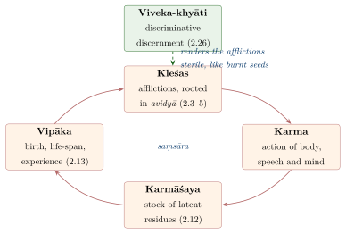
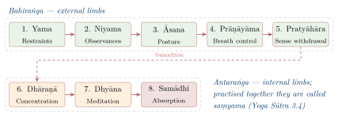
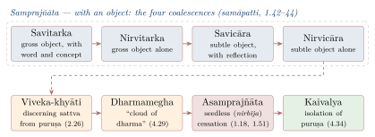

Chapter 5: Yoga — The Discipline of Union and Liberation¶
The Defining Sūtra
yogaś citta-vṛtti-nirodhaḥ
Yoga is the cessation of the fluctuations of the mind (citta).
— Yoga Sūtra 1.2
5.1 Historical Background¶
The word yoga is derived from the Sanskrit root yuj — “to yoke”, “to unite”, “to discipline.” Meditative and ascetic practices are attested in early Buddhist and Jain texts and in the middle Upaniṣads (Kaṭha, Śvetāśvatara); claims that yoga goes back to the Indus civilisation rest on ambiguous seal images and remain speculative. The philosophical system of Yoga was codified by Patañjali in the Yoga Sūtra, a work of 195 or 196 aphorisms (Maas 2013; Bryant 2009).
Historical Note: Patañjali
Later tradition reveres Patañjali as an incarnation of Ādiśeṣa, the serpent on whom Viṣṇu reclines, and a popular invocation verse of uncertain origin praises him as the one who removed the impurities of the mind through yoga, of speech through grammar, and of the body through medicine:
yogena cittasya padena vācāṃ malaṃ śarīrasya ca vaidyakena
yo ’pākarot taṃ pravaraṃ munīnāṃ patañjaliṃ prāñjalir ānato ’smi
This identification of the author of the Yoga Sūtra with the grammarian Patañjali (author of the Mahābhāṣya, mid-2nd century BCE) is traditional; most modern scholars regard them as different people. Philipp Maas has argued that the sūtras and the commentary traditionally ascribed to “Vyāsa” form a single work, the Pātañjala Yogaśāstra, composed c. 325–425 CE; this is now the most widely accepted dating (Maas 2006, 2013).
5.1.1 Key Texts and Commentaries¶
Table 5.1 lists the major texts of the tradition.
| Text | Author | Date | Significance |
|---|---|---|---|
| Yoga Sūtra | Patañjali | c. 325–425 CE (Maas) | 195/196 aphorisms |
| Yoga Bhāṣya | “Vyāsa” (possibly Patañjali himself) | same work, per Maas | Primary commentary |
| Vivaraṇa | attributed to Śaṅkara (disputed) | c. 8th c. CE or later | Sub-commentary on the Bhāṣya |
| Tattvavaiśāradī | Vācaspati Miśra | 9th or 10th c. CE | Sub-commentary on the Bhāṣya |
| Rājamārtaṇḍa | Bhoja | 11th c. CE | Independent commentary |
| Yogavārttika | Vijñānabhikṣu | 16th c. CE | Vedāntic interpretation |
5.2 Yoga and Sāṃkhya: Metaphysical Foundations¶
Yoga is traditionally paired with Sāṃkhya as its practical counterpart. While Sāṃkhya provides the theoretical framework (the 25 tattvas, the Puruṣa-Prakṛti dualism), Yoga provides the practical methodology for achieving the discriminative knowledge (viveka-jñāna) that leads to liberation.
The key difference: Yoga introduces īśvara (God) as a special Puruṣa (Yoga Sūtra 1.24; see Section 5.9). For this reason, Yoga is called seśvara Sāṃkhya (Sāṃkhya with God). Patañjali’s īśvara, however, is not a creator but a supreme teacher and object of meditation (Bronkhorst 1981).
5.3 The Structure of the Yoga Sūtra¶
The Yoga Sūtra is divided into four chapters (pādas; Table 5.2):
| Pāda | Name | Sūtras | Content |
|---|---|---|---|
| I | Samādhi Pāda | 51 | Nature of Yoga, types of samādhi, obstacles, and īśvara |
| II | Sādhana Pāda | 55 | Practice: kleśas, kriyā-yoga, the first five limbs |
| III | Vibhūti Pāda | 55/56 | Supernatural powers (siddhis) and inner limbs |
| IV | Kaivalya Pāda | 34 | Absolute liberation |
5.4 Citta and Its Modifications (Vṛttis)¶
The central concern of Yoga is the mind (citta) and its modifications (vṛttis). Patañjali names five (Yoga Sūtra 1.6): valid cognition (pramāṇa, comprising perception, inference and testimony), error (viparyaya), conceptual construction without a real object (vikalpa), sleep (nidrā) and memory (smṛti). The list is striking for what it includes. Valid knowledge, the goal of the other schools’ epistemologies, is here one fluctuation among others, to be stilled along with error and sleep; and sleep is a modification, not an absence of mind, because on waking we remember having slept well or badly. All five are restrained through practice (abhyāsa) and dispassion (vairāgya) (1.12).
The Yoga Bhāṣya also classifies the mind by its states (bhūmis), from the scattered to the fully stilled (Table 5.3).
| State | Sanskrit | Dominant Guṇa | Characteristics |
|---|---|---|---|
| Scattered | Kṣipta | Rajas | Agitated, distracted, restless; mind jumps from object to object |
| Dull | Mūḍha | Tamas | Torpid, sleepy, confused; prone to delusion |
| Partially focused | Vikṣipta | Rajas + Sattva | Occasionally focused but easily distracted; the ordinary state |
| One-pointed | Ekāgra | Sattva | Steadily focused on one object; proper state for dhyāna and samādhi |
| Ceased | Niruddha | Beyond guṇas | All modifications have ceased; the state of asamprajñāta samādhi |
Only the last two states — ekāgra and niruddha — are properly “Yogic.” The entire eight-limbed practice is designed to progressively refine the mind from its habitual scattered or dull state to the one-pointed and eventually ceased state.
5.5 The Five Kleśas (Afflictions)¶
Patañjali’s diagnosis of why the mind is restless is given in his list of the afflictions:
The Five Kleśas
avidyāsmitā-rāga-dveṣābhiniveśāḥ kleśāḥ
The afflictions are: ignorance, ego-sense, attachment, aversion, and clinging to life.
— Yoga Sūtra 2.3
Ignorance (avidyā) is the root; ego-sense (asmitā) is the identification of the seer with the instrument of seeing, the self with the intellect; attachment and aversion follow pleasure and pain; and clinging to life (abhiniveśa) is the fear of death present even in the wise. Yoga Sūtra 2.4 calls ignorance the “field” (kṣetra) of the other four, which may be dormant, attenuated, interrupted or active, and 2.5 defines it:
Definition of Avidyā
anityāśuci-duḥkhānātma-su nitya-śuci-sukhātma-khyātir avidyā
Avidyā is the seeing of the non-eternal as eternal, the impure as pure, the painful as pleasurable, and the non-self as the self.
— Yoga Sūtra 2.5
5.6 The Yoga Theory of Karma and Rebirth¶
The afflictions drive action, and action leaves its mark. Patañjali states (Yoga Sūtra 2.12–13) that the stock of karmic residues (karmāśaya) is rooted in the afflictions and that, as long as the root remains, it ripens in three ways: as the type of birth (jāti), the span of life (āyus) and the quality of experience (bhoga), pleasant or painful according to merit and demerit (2.14). The Bhāṣya distinguishes karma to be experienced in the present life from karma to be experienced in a future one, and karma whose fruition is fixed from karma whose fruition is not. The cycle is shown in Figure 5.1.

The scheme raises the question whether a life determined by past karma leaves room for choice. The Yoga Sūtra does not pose the question in those terms, and it is better not to force a modern problem of free will on it; what it does say is that the residues ripen only so long as their root, ignorance, remains, so that the practice of discrimination is itself the way out of the cycle.
5.7 Aṣṭāṅga Yoga — The Eight Limbs¶
The best-known part of Patañjali’s system is the aṣṭāṅga yoga (Yoga Sūtra 2.29) — the eight “limbs” of disciplined practice leading to kaivalya (liberation). Although it is the most famous section today, it occupies only part of the text, and some scholars think it was integrated from an older source (Figure 5.2).

5.7.1 The Outer Limbs¶
The first two limbs are ethical. The restraints (yama) are non-violence, truthfulness, not stealing, sexual continence and non-possessiveness (2.30), which Patañjali calls a “great vow” when they are kept without exception of birth, place, time or occasion (2.31); the observances (niyama) are purity, contentment, austerity, study and devotion to īśvara (2.32). Posture (āsana) is defined in three words:
Definition of Āsana
sthira-sukham āsanam
Posture should be steady and comfortable.
— Yoga Sūtra 2.46
The regulation of the breath, defined as the interruption of the movement of inhalation and exhalation (Yoga Sūtra 2.49). Patañjali distinguishes external, internal and suspended operations, regulated by place, time and number, and a “fourth” that goes beyond the external and internal (2.50–51); it removes the covering of the inner light and makes the mind fit for concentration (2.52–53). Later texts describe these as exhalation (recaka), inhalation (pūraka) and retention (kumbhaka).
Health and Safety Note
This chapter describes classical texts; it is not a manual of practice. Prolonged breath retention (kumbhaka) and other intensive breathing techniques can be hazardous, especially for people with heart or lung conditions, high blood pressure, epilepsy, or during pregnancy. The classical texts themselves warn that wrongly practised prāṇāyāma causes disease (e.g. Haṭhayogapradīpikā 2.16). Anyone wishing to practise should seek qualified instruction and medical advice.
Sense-withdrawal (pratyāhāra, 2.54), the fifth limb, is the turning of the senses away from their objects, often illustrated by the Bhagavad Gītā’s image (2.58) of a tortoise drawing in its limbs.
5.7.2 The Inner Limbs¶
Saṃyama — The Integrated Practice
-
Dhāraṇā (Concentration) — Binding the mind to one place, object, or idea (Yoga Sūtra 3.1)
-
Dhyāna (Meditation) — The uninterrupted flow of cognition towards the chosen object (Yoga Sūtra 3.2)
-
Samādhi (Absorption) — When meditation shines forth as the object alone, as if empty of its own form (Yoga Sūtra 3.3)
The combined practice of these three on any object is called saṃyama (3.4). Through mastery of saṃyama, the yogin attains the light of insight (prajñāloka, 3.5).
5.8 Types of Samādhi¶
Patañjali (1.17) says that samprajñāta samādhi, concentration with cognitive content, is accompanied by gross reflection (vitarka), subtle reflection (vicāra), joy (ānanda) or the sense of “I am” (asmitā). Separately (1.41–44) he describes four “coalescences” (samāpatti) of the mind with its object, which the commentators map on to the first two of these: with a gross object, first mixed with word and concept (savitarka) and then the object alone (nirvitarka); and with a subtle object such as the subtle elements, first with reflection on space and time (savicāra) and then the object alone (nirvicāra). Beyond these lies the objectless, “seedless” samādhi (asamprajñāta, nirbīja), in which all content ceases; discriminative discernment between sattva and the self (2.26) is the means to it, and it leads to isolation (Figure 5.3).

5.9 The Concept of īśvara in Yoga¶
īśvara in Yoga
kleśa-karma-vipākāśayair aparāmṛṣṭaḥ puruṣa-viśeṣa īśvaraḥ
īśvara is a special Puruṣa, untouched by afflictions, actions, their results, and latent impressions.
— Yoga Sūtra 1.24
Patañjali teaches that īśvara-praṇidhāna (devotion to God) is a direct and effective means to samādhi. The sacred syllable Oṃ is the designator (vācaka) of īśvara (Yoga Sūtra 1.27).
5.10 The Vibhūti Pāda: Supernatural Powers (Siddhis)¶
The third chapter of the Yoga Sūtra describes extraordinary powers (vibhūtis, siddhis) that arise from saṃyama on particular objects: knowledge of past and future from saṃyama on the three kinds of transformation (3.16), of the cries of all creatures from saṃyama on the distinction of word, meaning and idea (3.17), of previous births from saṃyama on latent impressions (3.18), invisibility from saṃyama on the form of the body (3.21), and omniscience from saṃyama on the distinction between sattva and the self (3.49). In the middle of this list Patañjali adds a warning:
Warning Against Siddhis
te samādhāv upasargā vyutthāne siddhayaḥ
These [powers] are obstacles to samādhi, though they are accomplishments in the worldly state.
— Yoga Sūtra 3.37
The siddhis are not the goal of Yoga; they are by-products of practice that can become obstacles if the practitioner becomes attached to them. True Yoga aims at kaivalya, not supernatural powers.
5.11 Kaivalya — Absolute Liberation¶
The ultimate goal of Yoga is kaivalya — the absolute isolation of Puruṣa from Prakṛti, the establishment of consciousness in its own essential nature.
Definition of Kaivalya
svarūpa-pratiṣṭhā vā citi-śaktir iti
[Liberation is the return of the guṇas to their source,] or the establishment of the power of consciousness in its own nature.
— Yoga Sūtra 4.34 (second half)
5.12 The Yoga Theory of Perception and Consciousness¶
The Yoga Sūtra presents a model of how consciousness, mind and objects interact to produce experience.
5.12.1 Yogic Perception (Yogi-Pratyakṣa)¶
One of Yoga’s epistemological contributions is the concept of yogi-pratyakṣa (yogic perception) — a form of direct, non-sensory cognition available to the advanced practitioner in the state of samādhi. Unlike ordinary perception, which requires the mediation of the sense organs, yogic perception involves the direct apprehension of reality by the purified buddhi, illuminated by the light of Puruṣa.
5.13 Yoga and the Bhagavad Gītā¶
The Bhagavad Gītā uses yoga more broadly than Patañjali, for several paths to the highest goal: karma-yoga, the path of action without attachment to results (“karmaṇy evādhikāras te mā phaleṣu kadācana”, 2.47); bhakti-yoga, loving surrender to the Lord (“sarva-dharmān parityajya mām ekaṃ śaraṇaṃ vraja”, 18.66); jñāna-yoga, discrimination between the real and the unreal; and the meditative discipline of its sixth chapter (the label “Rāja Yoga” for this path is later).
The Gītā’s synthesis is significant because it opens the highest goal to householders acting in the world; it even declares (9.32) that women, vaiśyas and śūdras — whom the verse, on a common reading, includes among those “of sinful birth” (pāpayonayaḥ) — can reach it through devotion, while at the same time insisting (3.35, 18.47) that each should perform the duties of his own social station.
5.14 Comparative Analysis: Yoga and Buddhist Meditation¶
The parallels between Patañjali’s Yoga and Buddhist meditation practice have been extensively discussed by scholars (Table 5.4):
| Aspect | Patañjali’s Yoga | Buddhist Meditation |
|---|---|---|
| Goal | Kaivalya (isolation of Puruṣa) | Nirvāṇa (cessation of craving) |
| Metaphysics | Puruṣa-Prakṛti dualism | Anātman (no permanent self) |
| Path structure | Aṣṭāṅga Yoga (8 limbs) | Aṣṭāṅgika Mārga (8-fold path) |
| Concentration | Dhāraṇā / Dhyāna / Samādhi | Samādhi / Jhāna |
| Mindfulness | Implicit in pratyāhāra and dhāraṇā | Satipaṭṭhāna (four foundations) |
| Ethical base | Yama-Niyama | Śīla (morality) |
5.15 Later Yoga: Haṭha and Rāja Yoga¶
From about the 11th century CE a new body of texts, beginning with the Amṛtasiddhi and culminating in Svātmārāma’s Haṭhayogapradīpikā (15th century), taught haṭha techniques — postures, breath-retention, bandhas and mudrās — that Patañjali treats only briefly or not at all. These texts also adopted the doctrine of kuṇḍalinī and of cakras and nāḍīs, which is not found in the Yoga Sūtra but comes from Śaiva Tantric traditions of the later first millennium; the number and arrangement of the cakras vary between texts, and modern correlations of cakras with endocrine glands are 20th-century innovations (Mallinson and Singleton 2017). The Haṭhayogapradīpikā (1.2) says that it teaches haṭha “solely for the sake of Rāja Yoga” (kevalaṃ rājayogāya haṭhavidyopadiśyate); there “Rāja Yoga” means the state of samādhi, and its identification with Patañjali’s system became standard only with Svāmī Vivekānanda’s Rāja Yoga (1896).
The practices of the eight limbs, the obstacles and remedies of Yoga Sūtra 1.30–39, Kriyā Yoga, prāṇāyāma and the haṭha tradition are treated in detail in Vol. 5 of this series, Yoga Taraṅgiṇī; this chapter has concentrated on Yoga as a philosophical system.
5.16 Yoga’s Enduring Relevance¶
Patañjali’s Yoga became, especially from the 19th century, a reference point for modern yoga worldwide, although modern posture-based yoga owes more to later haṭha traditions and to 20th-century innovation than to the Yoga Sūtra. Its analysis of the mind and of the afflictions continues to be studied by philosophers and psychologists; claims about the health benefits of modern practices are a matter for clinical research and are not assessed in this volume.
Its philosophical framework is Sāṃkhya’s (Chapter 4); its parallels with Buddhist meditation are taken up again in Chapter 10, and the status of yogic perception in Chapter 13.